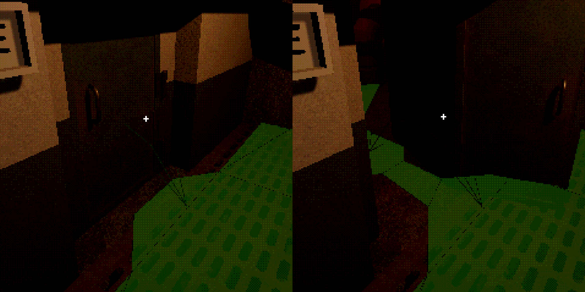
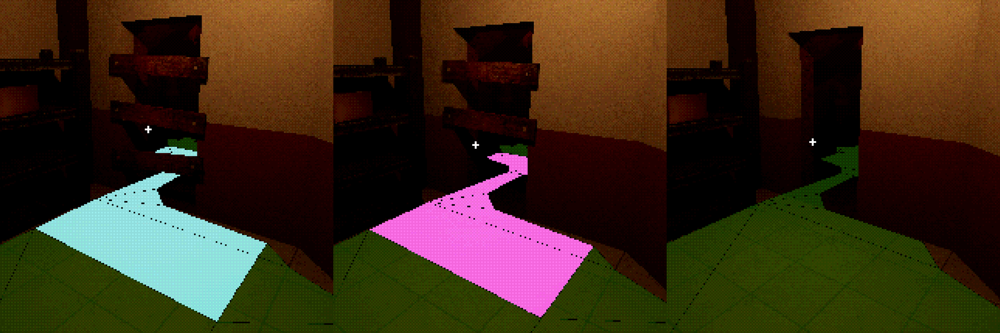

Unreal Engine Five - AI Development
Key points in feature development:
- AI Perception Improvement (code)
- Environment Query System Usage
- AI Navigation Foundations
- AI - Door Interaction
- Dynamic Obstacle-Navmesh Effects
AI Perception Improvement:
The first step in AI work was to improve the way in which Unreal's perception system detects the player by sight.
The default method raycasts against the center of the player, producing unwanted results illustrated below:
To fix this, the CanBeSeenFrom interface was rewritten for the player character, to introduce a second raycast against the position of the camera, the best representation of the head.
OutSightStrength = 1;
FHitResult HitResult;
FVector SightTargetLocation = GetCapsuleComponent()->GetComponentLocation();
const FCollisionQueryParams CollisionQueryParams = FCollisionQueryParams(FName(TEXT("CharacterLOSTest")), false, IgnoreActor);
const UWorld* World = GetWorld();
World->LineTraceSingleByChannel(HitResult, ObserverLocation, SightTargetLocation, ECC_Visibility, CollisionQueryParams);
if (HitResult.GetActor() == this)
{
OutSeenLocation = SightTargetLocation;
NumberOfLoSChecksPerformed = 1;
return true;
}
SightTargetLocation = GetFirstPersonCameraComponent()->GetComponentLocation();
NumberOfLoSChecksPerformed = 2;
World->LineTraceSingleByChannel(HitResult, ObserverLocation, SightTargetLocation, ECC_Visibility, CollisionQueryParams);
if (HitResult.GetActor() == this)
{
OutSeenLocation = SightTargetLocation;
return true;
}
OutSightStrength = 0;
return false;
The check against the capsule centre was kept for situations in which the head is obscured, but no further checks were added for sake of performance.
Likewise, the code was optimised as much as was possible due to its potential for use on every tick, and potentially including two raycasts.
This has proven suitable for my needs in testing, though may be revisited in future.
Environment Query System Usage:

As I began to develop the AI behaviour, the need arose for a "search" state that the AI would switch to after losing sight of the player, or as it investigates the source of a noise.
After some research, I began using the Environment Query System as the basis of this.
In a cone forwards from the AI, locations are judged on their distance and visibility from the AI's current position to prioritise blind spots to be searched.
This is used to find a search location, and the process is repeated several times unless interrupted by new stimuli.
Due to some test cases giving no blind spots in a direction, I expanded on this behaviour to make the AI rotate and repeat this process in a new direction if no suitable positions are found.
This has proven suitable in testing, and I am experimenting with further uses of the EQS, such as to center the AI's roaming behaviour to be "tethered" to the player location so that it never strays too far away by chance.
AI Navigation Foundations:
As I began to work on the AI and its ability to navigate levels, I first settled on some key design principles:
For sake of performance, the navmesh would only update in real-time, from earmarked actors only.
These earmarked actors would affect the navmesh only through navmesh modifiers to provide maximum control over their effects.
Likewise, these objects would not collide with the AI, instead relying on their navmesh alterations to confine movement. This is to avoid unwanted behaviour emerging from physics quirks.
AI - Door Interaction:
Doors were first developed with the player interaction system, for mouse/cursor based control.
Hence, adding proper AI-interaction with this system presented an interesting challenge to solve.
I started by adding a nav-link to doors, by which the AI recognises a passage between the navmesh either side of the doorway.
With no collisions between the door and AI, as per the principles, this solved the first step of allowing AI-navigation.
The next step was to add proper interaction between the AI and the door as it passes through, including factoring in the state of the door.
To start with this, I added a custom event to the nav-link for when the AI crosses it.
This event applied an impulse to the interaction component to propel it into a fully open position, whilst pausing the AI's motion for a moment as the door opens.
The functionality was also added such that player interaction could not interrupt this, and the door would not bounce back from its outer limit despite the force.
This was already a marked improvement to AI door usage, albeit this process would take place even for an open door, with the same delay to AI movement.
The interaction component of the door contains delegates related to it's movement and openness.
I used these to enable/disable the navlink based on the door's position, alternating with a navmodifier that enabled ordinary movement through the doorway.
After some fine-tuning in testing, this provided an ideal solution to believable interaction between the AI and doors.
It even improved gameplay through the risk/reward of a player stopping to attempt to close doors behind them in order to slow down a pursuing AI.
I am further experimenting with this in various ways, such as adding an additional navmodifier to encourage better AI movement around an open door being passed but not entered.
Dynamic Obstacle-Navmesh Effects:
After door interaction, designing AI-affecting obstacles was mainly a matter of applying what doors had taught me and experimenting with Navigation Query Filters.
The nominal dynamic obstacle is any form of barricade blocking a passage, such as nailed boards across a doorway.
For these, I tested using a navmodifier whose "area class" changed as the obstacle is cleared.
Starting as a full obstacle, partial clearing changes the area class to a partial obstacle, finally it becomes natural navmesh when fully cleared.
Instead of overriding the default navigation cost, these area classes use differing costs of entry so that the act of crossing the barrier applies cost, instead of any quirk of the nav modifier size.
I began utilising Navigation Query Filters for the AI based on its current state, to further affect how it reacted to obstacles.
Normal roaming excluded full obstacles areas entirely, to prevent crossing.
Investigating a sound on the other hand would remove any extra cost of crossing a partial obstacle. Full obstacles retained a crossing cost to encourage the AI to take clear paths to investigate, if possible.
When the AI was actively hostile to the player, partial and full obstacles lost all extra navigation cost, resulting in the most direct path being taken to catch the player.
Whilst the navigation cost values required adjustment, this has proven suitable for altering the way the AI navigates the environment, based on player actions.
For an overview of key UE5 features developed, click here. To see all development summaries, click here.